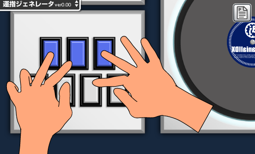

📑 文章目录（11 节）
本文针对游玩 IIDX（beatmania IIDX）时感觉“手指动不了”“手指跟不上”的情况，深入解析其背后原因与改正练习方法，并一并总结了手型摆法与“立指敲键”的技巧。
笔者过去肯定也经历过觉得手指跟不上的阶段，但那早已久远到记不清具体是什么时候了——只顾着埋头打歌，不知不觉间就不再受此困扰。笔者既没有做过专门的手指力量训练，也认为其实并没有这个必要。
- 感觉“手指跟不上”时，真正的原因往往不是手指慢，而是眼睛（没看清谱面）
- 若确实是手指本身的问题，应排查过度用力、手型摆法不当、指法（运指）尚未固定这三项中的哪一项
- 最基本的练法是挂 RANDOM（乱）大量刷略低于当前极限的难度曲，效果远胜于手指力量训练
- 手部出现疼痛请立刻休息；游玩时手腕要悬空，放松轻按
先确认症结在于“眼睛”还是“手指”
当你觉得“手指跟不上”时，实际情况往往是大脑看到谱面后，判断“该按哪个键”的速度没跟上。判断一旦慢半拍，留给手指反应和落键的时间就被严重压缩，于是便会产生“手指太慢”的错觉。
可以通过下面两种方法判断原因出在哪一方：
- 把绿数字调大（放慢谱面流速）再打同一首歌：如果变慢后就能按出来，说明多半是眼睛（读谱认知）的原因
- 把同一段键型反复打熟记在脑子里再按：如果背下来了依然按不出来，那么大概率就是手指（指法或手型姿势）的问题
如果症结在眼睛，比起死练手指，更需要的是读谱训练。关于谱面的读法与认知，详见以下两篇文章。
手指动不了・跟不上的主要原因
手部过于紧绷发力
一遇到难段，手臂和手掌就很容易不自觉地僵硬发力。肌肉一绷紧，抬指回弹的速度就会变慢，进而赶不上紧随其后的下一个音符。街机按键并不需要死命往下怼就能触发，请务必养成按下瞬间立刻卸力放松的意识。
手指摆法与手型姿势不对
如果把手腕抵在键台边缘借力，或者手指伸得笔直去拍键，都会极大限制手指的灵活性。基本姿势应该是手腕悬空、手指自然微弯轻放在键面上。细节将在下一节“手指摆法”中展开说明。
指法（运指）尚未定型
如果每个键由哪根手指负责还没有固定下来，就很容易出现同一根手指被迫连打、或是突然手指不够用的窘境。先确定一套固定指法，并严格按照固定分工去按键非常重要。
身体疲劳或尚未热身
刚开打时手指还没活动开，灵活度自然不如平时；反之，连续刷太久感到疲劳后，手速和协调性也会显著滑坡。切忌上来就直接猛攻高难曲，请由易到难循序渐进。笔者（SP 皆传）平时会从 ☆10 左右起步热身，进入 ☆12 之后也会先从简单的曲子开始慢慢加码。觉得累了就及时休息。
按键弹簧过重
如果是在家使用专控/手台游玩，也有可能是因为弹簧或微动开关偏重，才导致手指跟不上。假如出现“在街机厅能轻松接住，回到家就按不动”的现象，不妨也排查一下手台配件配置。
手型摆法与“立指敲键”的发力技巧
谈到 IIDX 的进阶技巧时，常会听到“立起手指去按（立指）”的说法。这并不是指把手指摊平用指腹去拍，而是让手指略微弯曲，用靠近指尖的部位去击键的按键方式。
- 只需小幅度上下活动手指就能触发按键，非常适合高速配置
- 指尖从键面正上方垂直落下，下压力量能够笔直向下传导；如果手指伸平，施力方向会发斜，白白浪费力气
- 手指微弯能让关节结构更稳固，只需更少的力气即可按下键位（与弹钢琴时手型微拱的道理相同）
- 不容易蹭到相邻按键，从而减少误触串键
- 不过如果立得过于笔直僵硬，反而容易憋劲发力，保持自然轻弯的弧度就够了
笔者本人也是采用立指敲键的方式。从实际体感来讲，微微立指确实既按得更快，也更精准。
至于具体的手指摆放分工，取决于你选用的指法（运指）。最主流的 1048式手型摆法如下图所示（1P / 2P）。


击键时如果将食指和大拇指的落点略微错开（食指偏键位靠里侧、大拇指偏键位靠外侧），就能借助手掌轻微的前后摆动发力，打交互（颤音/Trill）时会轻松不少。
让手指跟得上谱面的实用练习方法
- 挂 RANDOM（乱）大量刷略低一档的难度曲
挑选比当前可通关星级低 1 级左右的曲目，挂上 RANDOM（乱）大量练习。在游刃有余的速度下让手指充分记住各式各样的键型组合，是最稳妥的捷径。
- 锁定薄弱键型进行专项训练
明确自己容易卡壳的键型——例如交互（Trill）、楼梯（阶梯）、双押/多押同时押等，专门挑富含这类配置的谱面去练。如果不擅长打交互，也可以参考下面这篇交互专题文章。
- 关注 Miss 数（BP）稳步提升地力
练习时不能只盯着过没过关，同时留意 Miss 数（BP）和分数变化，才能及时察觉自己哪些段落其实没按稳。系统的地力提升方法整理在下面这篇文章中。
单纯孤立地锻炼手指力量（比如练握力器或做指力健肌训练），对打好 IIDX 而言优先级其实并不高。相关观点我在下面这篇文章里详细聊过。
手指动不了时的常见问题
无名指和小指总是不听使唤，该怎么办？
无名指与小指在生理结构上本来就比其他手指更难独立发力。最外侧的 7 号键（2P 侧为 1 号键）用两根手指中你觉得更顺手的那根去按即可。两者的特点分别是：无名指更有力，而小指更容易独立活动。
按键时一定要立起手指来按吗？
让手指自然轻弯、用靠近指尖的位置按键，确实更便于应对高速配置。但切忌立得过于生硬导致肌肉紧绷，保持微微弯曲的放松弧度即可。
非惯用手总是跟不上节奏怎么办？
这是几乎所有玩家都会遇到的必经烦恼。非常有效的方法是挑选非惯用手负担键位较多的谱面，在略低的难度档位上反复多刷。此外，尝试游玩 DP 模式或单手模式，也能很好地拓宽非惯用手的控制范围与协调性。
打歌时手部或手腕会发痛
一旦出现疼痛请务必立刻停止硬撑、充分休息。把手腕压在键盘前方边缘借力会给手腕带来极大负担，请坚持手腕悬空，并且做到按键后瞬间松力。如果疼痛持续不退，建议及时就医咨询专业医生。
总结
当感觉手指动不了或跟不上时，第一步要先分辨症结是在眼睛（读谱认知）还是在手指本身。
- 调大绿数字后能按出来，说明问题出在眼睛，应侧重训练读谱能力
- 如果是手指本身的问题，请检查是否用力过猛、手型摆法及指法是否合理
- 最核心的练习方法，永远是挂 RANDOM（乱）大量刷略低难度的曲目
更多关于系统性进阶的思路，也整理在下面这篇汇总文章里。